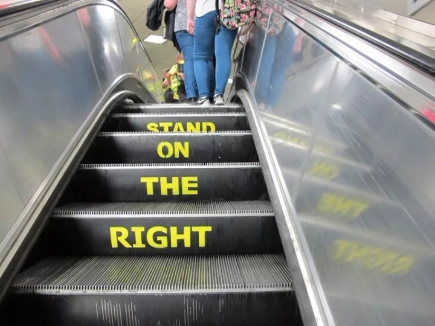
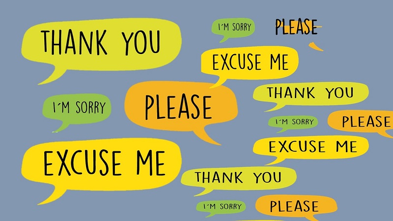
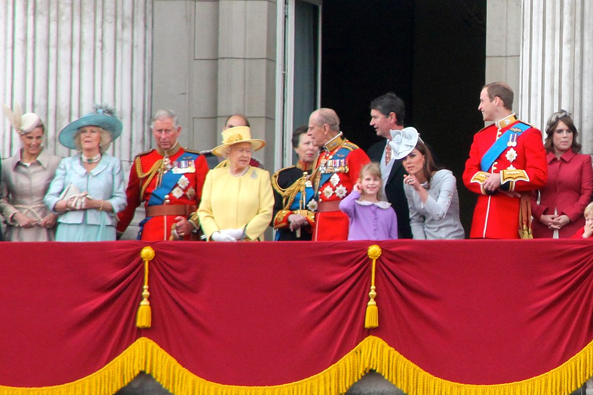

The United Kingdom
A combination of history and modernity, where classic meets contemporary life!

A combination of history and modernity, where classic meets contemporary life!
For the British, tea is not just a drink, but a calming tradition that creates a cozy and relaxed atmosphere, helping to have serious conversations more easily. The act of preparing tea naturally brings a pause, allowing time to focus and reflect. Offering tea has become a social norm in British culture, enhancing the sense of hospitality and security during conversations.

The British absolutely love standing in queues – it's their quirky tradition! Queue culture dates back to the Industrial Revolution and World Wars when order became essential. Waiting in line became not only a daily routine but also a sign of community, and following rules symbolizes British integrity. Queues have become an unofficial ritual where everyone knows their place and waits with astonishing patience. Here are some key rules most Brits follow:
1. Never cut in line
2. Respect the people around you
3. Don’t leave too much of a gap
4. Politely stop those who cut in

The British simply cannot resist supporting the underdog! Whether it’s the slowest runner or the least popular contestant, if the odds are against them, the Brits will surely sympathize and cheer them on. Modesty is valued, so those who are struggling often receive the most affection. This is especially evident in sports events or game shows, where even the most unexpected outsider can become the crowd's favorite!
.png)
It is often said that the weather in the United Kingdom is "changeable" because it changes constantly. The day can start with sunshine, then rain in the afternoon, and end with gray clouds in the evening. Therefore, the weather is a constant topic of conversation among the British, and it’s a great subject to discuss with anyone – whether a friend or a stranger. For Brits, this topic never gets old.

A typical example – the subway. If someone steps on your foot, chances are they’ll say “sorry,” but you’ll often apologize for being in their way too! The British say "sorry" not only when they want to apologize but also when they want to express dissatisfaction, such as "Sorry, my coffee is cold," even if it wasn’t their fault. In other words, "sorry" is very common here, so don’t be surprised if you hear it many times.

The Royal Family is British greatness with a touch of sparkle and many traditions! They are not only a symbol but also the face of the United Kingdom to the world: from grand parades to smiles in front of cameras. The King or Queen may not govern the country, but their significance is invaluable! Without them, there wouldn’t be those magnificent weddings, impressive birthdays, or even fun stories about their daily lives. To Brits, they are simply irreplaceable!

In the United Kingdom, dinner is usually eaten quite early – between 6 and 8 PM. This is influenced by work schedules, family traditions, and even favorite TV shows that air around 7 PM. Also, it is believed that an early dinner is good for health, so the Brits prefer to enjoy their meal earlier. So, while some countries are still preparing for dinner, the Brits are already settled on the sofa with a cup of tea!

Burns Night, celebrated on January 25th, honors the Scottish poet Robert Burns with haggis, whisky, and poetry readings.

St. David's Day, celebrated on March 1st, honors the patron saint of Wales with parades, daffodils, and traditional celebrations.
St. George's Day, celebrated on April 23rd, honors the patron saint of England with flags, parades, and traditional festivities.

King Charles III's birthday is celebrated on November 14th, but the official celebration with the "Trooping the Colour" parade takes place in June.
Remembrance Day, celebrated on November 11th, honors fallen soldiers with a minute of silence and the symbol of poppies.
Here’s some oftenly used phrases in the United Kingdom! These phrases will help you not to get lost during conversations. However, use them with cautions, because if you get carried away, it can come across as rude.
Meaning: "would you like some tea?"
Usage: "It's been a long day. Fancy a cuppa?"
"Fancy a cuppa?" is commonly used when you want to offer tea to guests or take a break.
A tip! Even if you don't actually want tea, a polite refusal may still lead to another offer!
Meaning: "how are you?", "are you okay?"
Usage: "Alright, mate? How's your day been?"
This informal greeting is very common in the UK, especially among friends.
A tip! A simple "Yeah, you?" is the usual expected response.
Meaning: naughty, a bit disrespectful but funny.
Usage: "Let's have a cheeky pint after work!"
The Brits often use "cheeky" when talking about small pleasures that you do spontaneously or a little "illegally"!
A tip! It sounds charming when used in a lighthearted spirit.
Meaning: very, extremely, bloody (intense emphasis).
Usage: "That was a bloody brilliant idea!"
This word is used to emphasize both positive and negative emotions.
A tip! While "bloody" isn't particularly rude, in some situations, it can sound slightly impolite!
Meaning: nice, sweet, wonderful.
Usage: "She's such a lovely person."
This word can be used to describe both people, situations, or even objects.
A tip! Brits love using "lovely" as a polite and warm response to offers or compliments, such as "Fancy a cuppa?" – "Oh, lovely!".
Meaning: friend, buddy, partner.
Usage: "Mate, what are you doing?"
This word is most commonly used in informal conversations among friends or acquaintances.
A tip! When "mate" is said in a harsher tone, it can also convey irritation or even a warning – it depends on the situation and tone of voice.
Meaning: complete nonsense, rubbish.
Usage: "You think they'll win? That's rubbish!"
"Rubbish" is used in British English both literally ("garbage") and figuratively when something is of very poor quality or doesn't reflect reality.
A tip! "Rubbish" sounds informal and a bit insulting. Avoid using it in serious or professional conversations, but it's acceptable with humor in everyday speech.
Meaning: very tired, exhausted.
Usage: "I'm absolutely knackered!"
This is a very informal British word, often used in daily conversation.
A tip! It can be used in casual, friendly conversations, but avoid it in formal situations.
Meaning: making fun of someone in a friendly way.
Usage: "He's just taking the mickey."
This is a non-offensive phrase, but it all depends on the tone – sometimes it can mean more serious teasing!
A tip! Watch your tone! This phrase can become offensive if said too critically.
Meaning: surprise, shock, stun.
Usage: "Blimey, that's amazing!"
This word is often used in emotional situations and sounds quite old-fashioned, but it's still popular!
A tip! Avoid using this word if you want to sound very modern.
Meaning: that's it / job done.
Usage: "Just add the milk, and Bob's your uncle!"
Often used when explaining a simple solution or instruction with a humorous tone!
A tip! Try not to use this phrase in serious situations.
Meaning: surprise, shock, stun.
Usage: "Crikey, that's amazing!"
This word is usually used in friendly or mildly shocking situations, often with humor.
A tip! It can sound a bit old-fashioned, so use it carefully to avoid sounding too retro.
Meaning: very disappointed or sad.
Usage: "I was gutted when I missed the concert."
This informal word is often used when talking about losses or disappointment.
A tip! This word may be too emotional in more serious situations, so avoid using it in formal settings.
Meaning: "go away!" or "no way!"
Usage: "Oh, on your bike, mate!"
This is a slightly rude but still popular British phrase used to ask someone to leave or go away. It can also be a lighthearted way of parting, especially if said with humor.
A tip! Use this phrase only with friends or in informal conversations, as it may be offensive in more serious contexts.
Meaning: farewell, goodbye, bye.
Usage: "Cheerio, see you tomorrow!"
This word is often used when leaving or parting ways with someone in a friendly way.
A tip! While it may sound quaint, it's still an endearing phrase used with people who know you well.


.jpg)
.jpg)


Here’s some things you should never do, if you want to blend in and avoid uncomfortable situations. Follow these A tips to make a great impression!
| Don't: | Why? | What to do instead: | |
|---|---|---|---|
| Referring to the UK as "England" | The UK consists of England, Scotland, Wales, and Northern Ireland. Referring to it as just "England" can offend people from other parts. | Refer to the country as the UK or mention a specific part. |  |
| Blocking the escalator | People stand on one side (usually the right) and walk on the other. Blocking both sides slows down the flow. | Stand on the correct side and allow people to pass. |  |
| Refusing a cup of tea | Tea is a significant part of the country's culture, and refusing it may come across as impolite. | Accept the offer or politely explain if you really don't want tea. |  |
| Imitating a British accent | This can seem like mockery or an insult, even if unintentional. | Acknowledge the accent without trying to mimic it. | .svg.png) |
| Ignoring queuing culture | Queueing is taken very seriously, and not following the rules is considered very rude. | Always wait your turn. | |
| Disregarding basic manners | Politeness is highly valued, and forgetting "please" or "thank you" can seem rude. | Always say "please" and "thank you." |  |
| Making jokes about the Royal Family | The Royal Family is highly respected, and jokes about them can offend people. | Avoid making jokes about them, especially in public. |  |